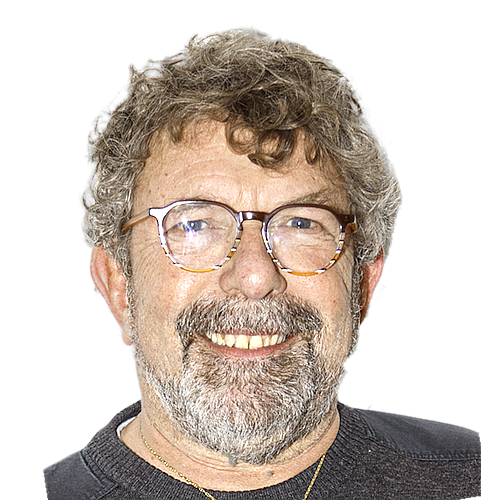
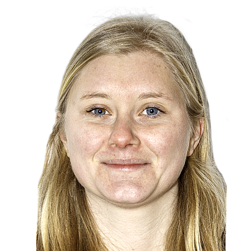

15 colistiers engagés
Notre Équipe
Des femmes et des hommes de terrain, au service de Portieux–La Verrerie.
Christelle PAILLARD
58 ans — Ingénieur en Urbanisme
Candidate Maire

Christophe DAUBINET
66 ans — Retraité, Prothésiste-Dentaire
Ancien Adjoint 54

Martine WIETECKA
59 ans — Professeure de Lettres Modernes
Conseillère Municipale

Sébastien FERRY
32 ans — Assistant de Direction
Conseiller Municipal

Nathalie LAMBERT
57 ans — Instructeur des Autorisations d'Urbanisme
Conseillère Municipale
Lionel JEANDEL
55 ans — Menuisier-Poseur
Conseiller Municipal

Nadia KHELIFI
60 ans — Animatrice Maison de Retraite

Fabien GIRAUD
42 ans — Professeur de Mathématiques

Eva DEL PIERRAT
28 ans — Profession libérale, « La Ferme de la Prairie »

Yohann FEY
42 ans — Agent de Sécurité - Contrôleur

Armelle PERRY-BERGE
48 ans — Professeur des Écoles
Philippe MARINUTTI
60 ans — Retraité Éducation Nationale

Bénédicte REMY
41 ans — Infirmière en Psychiatrie, Centre Hospitalier

Pierre BERTHOLET
38 ans — Archéologue
.png)
Catherine HERETE
48 ans — Aide Soignante en EHPAD